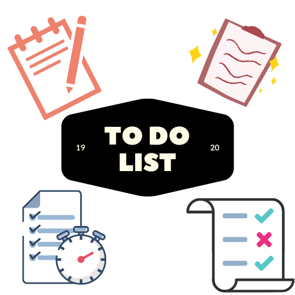

When you are feeling overwhelmed it is a great idea to take a break.
So here is a 15 minute break timer so you can be relaxed and remember to return to your
responsibilities.

I have personally felt overwhelmed by school and life and never know what I need
to be doing. Here is a to-do list to write out your tasks and you can scratch them off as you go
along